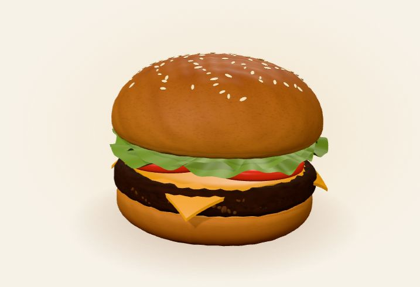

VR FAST FOOD · STREET FOOD
À PLEINE
BOUCHE.
Du pain doré. Du fromage fondant.
Et l’envie d’y revenir.

LE BURGER, SOUS TOUS LES ANGLES.
Composition illustrative · ne représente pas un plat de la carte
POUR LA SUITE
UNE ENVIE ?
ÇA COMMENCE ICI.
La commande en ligne n’est pas encore disponible. Les plats, les prix et les coordonnées du restaurant doivent être confirmés.
Découvrir la carteON SE RETROUVE ?
LE RESTAURANT.
Les informations pratiques seront affichées
dès leur confirmation.